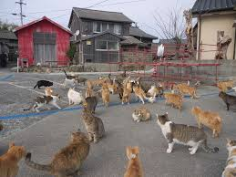
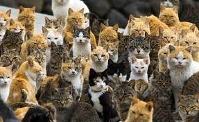

lokasi

Aoshima ( Jepang :青島, Hepburn : Aoshima ) , juga dikenal sebagai Pulau Kucing ( Jepang :猫の島, Hepburn : Neko no shima ) ,
adalah sebuah pulau di Prefektur Ehime , Jepang, yang dikenal karena jumlah penghuni kucingnya yang banyak dan jumlah penghuni manusianya yang sedikit.
Sejarah

Awalnya, kucing dibawa ke pulau ini untuk mengendalikan populasi tikus yang dapat merusak ulat sutra, sebuah sumber ekonomi penting di masa lalu.
Seiring waktu, kucing-kucing ini berkembang biak dan menjadi bagian penting dari budaya lokal.
populasi

Manusia di Tashirojima berjumlah kurang dari 100 orang, kebanyakan adalah lansia.
Sementara itu, kucing-kucing di pulau ini diperkirakan berjumlah ratusan dan bergerak bebas di seluruh pulau.
asal usul

Awalnya, kucing dibawa ke pulau ini untuk mengendalikan populasi tikus yang dapat merusak ulat sutra, sebuah sumber ekonomi penting di masa lalu.
Seiring waktu, kucing-kucing ini berkembang biak dan menjadi bagian penting dari budaya lokal.
kucing sebagai pembawa keberuntungan

Penduduk setempat percaya bahwa kucing membawa keberuntungan dan kesejahteraan.
Di pulau ini terdapat kuil khusus, Neko-jinja (Kuil Kucing), yang didedikasikan untuk kucing, di mana pengunjung seringkali datang memberikan persembahan untuk menghormati mereka.
pariwisata

Pulau ini menjadi destinasi populer bagi pecinta kucing dari seluruh dunia.
Para turis datang untuk berinteraksi dengan kucing-kucing yang ramah dan menikmati suasana alami pulau.
Ada penginapan dengan tema kucing untuk mengakomodasi pengunjung.
akses
Pulau ini dapat diakses melalui kapal feri dari kota pelabuhan Ishinomaki di daratan utama.
Pulau ini tenang dan alami, dengan dua desa utama yaitu Nitoda dan Odomari, yang cocok untuk para wisatawan yang ingin menikmati suasana pedesaan.